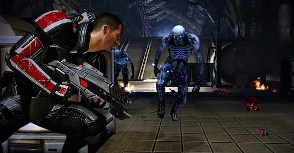

Mass Effect 2 is an action role-playing video game developed by BioWare and published by Electronic Arts. It was released for Microsoft Windows and Xbox 360 on January 26, 2010, and for PlayStation 3 on January 18, 2011. Mass Effect 2 is the second installment of the Mass Effect series and a sequel to the original Mass Effect. The game takes place within the Milky Way galaxy during the 22nd century, where humanity is threatened by an insectoid species known as the Collectors. The player assumes the role of Commander Shepard, an elite human soldier who must construct and gain the loyalty of a diverse team in order to defeat the enemy in a suicide mission.
Mass Effect 2 is a single-player action role-playing game where the player takes the role of Commander Shepard through a third-person perspective. Shepard's gender, appearance, military background, combat-training and first name are determined by the player before the game begins.

Mass Effect 2 is one of the most fun games I have played. The game has elements of RPG and third person shooter. You play as Commander Shepard and at the beginning of the game you can choose his/her gender and appearance. Also, you can choose what class your character is. Each class comes with a different set of skills and powers. Example classes are: Soldier, Infiltrator, Adept and Sentinel. At the start of the game, you must recruit people to join you in a suicide mission. The missions you play include recruit missions and then missions to gain the loyalty of the recruits. If a teammate is loyal, he/she is more likely to survive the final suicide mission. One of the best things about Mass Effect 2 is the characters; the characters are likeable and well-developed.
| Name of Game | Year Released |
|---|---|
| Mass Effect 3 | 2012 |
| Mass Effect 1 | 2007 |
| Mass Effect 2 | 2010 |